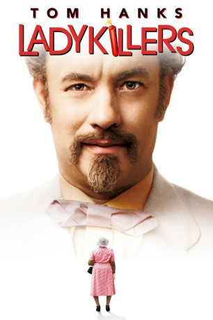
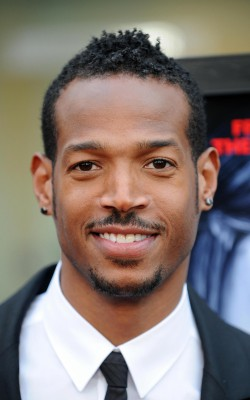
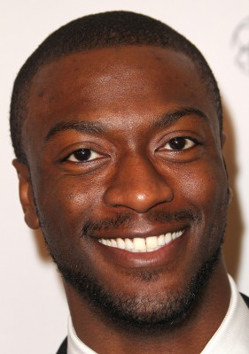

#3956 Ladykillers
Alternativ: The Ladykillers
 
 IMDB-Wertung: 6.2 / 10
IMDB-Wertung: 6.2 / 10  Metascore: 0
Metascore: 0 
Goldthwait Higginson Dorr (Tom Hanks) ist Professor. Zumindest gibt er sich als solcher aus, und das erfolgreich. Eigentlich ist er Verbrecher, weswegen er sich auch der älteren Lady Munson (Irma P. Hall) annähert und bei ihr als Untermieter einzieht. Was er möchte, ist Geld - mit vier weiteren Gaunern plant er den Raub des Jahrhunderts: Ein Tunnel soll von Mrs. Munsons Keller bis zum Tresorraum des New Orleans Riverboat Casinos führen. Damit die alte Lady bloß nichts mitbekommt, tarnt sich die Verbrecherbande als Kirchenmusiker und legt mit ihrem Plan los. Das Problem: Die fünf Experten sind nicht gerade die besten Freunde und auch mangelt es ihnen an intellektueller Fähigkeit, um die Arbeit sauber und gewissenhaft durchzuführen. Das allergrößte Problem: Sie haben Munson unterschätzt und nun müssen sie sich auch noch um die alte Kirchenwitwe kümmern. Es kann ja nicht so kompliziert werden, sich einer alten Dame zu entledigen...
Jahr: 2004
Dauer: 99 Minuten
FSK: 12
Land: USA Studio: Buena Vista PicturesTonspuren: DD5.1 - ,
Untertitel:
Auflösung: 720p (1280x696) Größe: 2119 MB
Genre: Thriller, Komödie, Krimi
Regisseur:  Ethan Coen,
Ethan Coen,  Joel Coen
Joel Coen
Drehbuch: Robert Lewis
Soundtrack:
Darsteller:
 Tom Hanks als Professor G.H. Dorr
Tom Hanks als Professor G.H. Dorr Irma P. Hall als Marva Munson
Irma P. Hall als Marva Munson-  Marlon Wayans als Gawain MacSam
 J.K. Simmons als Garth Pancake
J.K. Simmons als Garth Pancake Tzi Ma als The General
Tzi Ma als The General Ryan Hurst als Lump Hudson
Ryan Hurst als Lump Hudson- Diane Delano als Mountain Girl
 George Wallace als Sheriff Wyner
George Wallace als Sheriff Wyner John McConnell als Deputy Sheriff
John McConnell als Deputy Sheriff- Jason Weaver als Weemack Funthes
 Stephen Root als Fernand Gudge
Stephen Root als Fernand Gudge- Lyne Odums als Rosalie Funthes
- Walter K. Jordan als Elron
- George Anthony Bell als Preacher
 Greg Grunberg als TV Commercial Director
Greg Grunberg als TV Commercial Director- Robert Baker als Quarterback
 Blake Clark als Football Coach
Blake Clark als Football Coach- Amad Jackson als Doughnut Gangster
-  Aldis Hodge als Doughnut Gangster
 Freda Foh Shen als Doughnut Woman
Freda Foh Shen als Doughnut Woman Jeremy Suarez als Li'l Gawain
Jeremy Suarez als Li'l Gawain- Jennifer Echols als Waffle Hut Waitress
- Louisa Abernathy als Church Voice
 Bruce Campbell als Humane Society Worker , uncredited
Bruce Campbell als Humane Society Worker , uncredited- Hallie Singleton als Craft Service
- Paula Martin als Gawain's Mama
- Te Te Benn als Gawain's Sister
- Khalil East als Gawain's Brother
- Nita Norris als Tea Lady
- Vivian Smallwood als Tea Lady
- Maryn Tasco als Tea Lady
- Muriel Whitaker als Tea Lady
- Jessie Bailey als Tea Lady
- Mildred Dumas als Church Voice
 Al Fann als Church Voice
Al Fann als Church Voice- Mi Mi Green-Fann als Church Voice
- Maurice Watson als Othar
- Michael Dotson als Angry Football Fan , uncredited
Datei: X:\2004(G-M)\Ladykillers (2004, FSK12, 1280x696).mkv seit 06.07.2016
Festplatte: HD 2003-2004-2005(A-F)
 Es gibt insgesamt 41 Filme in der Gruppe '2004(G-M)'
Es gibt insgesamt 41 Filme in der Gruppe '2004(G-M)'